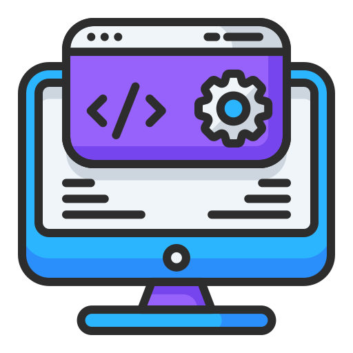
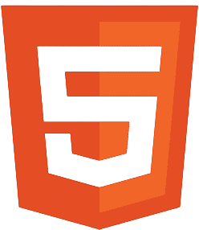
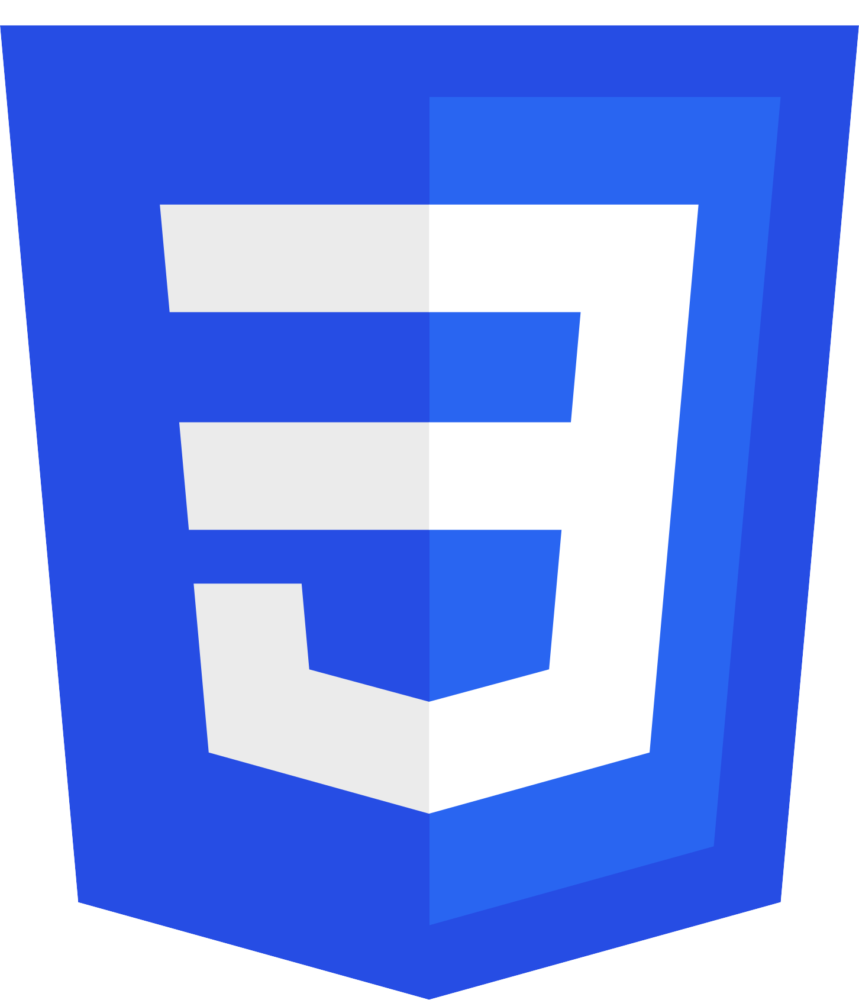
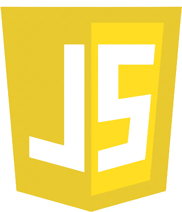
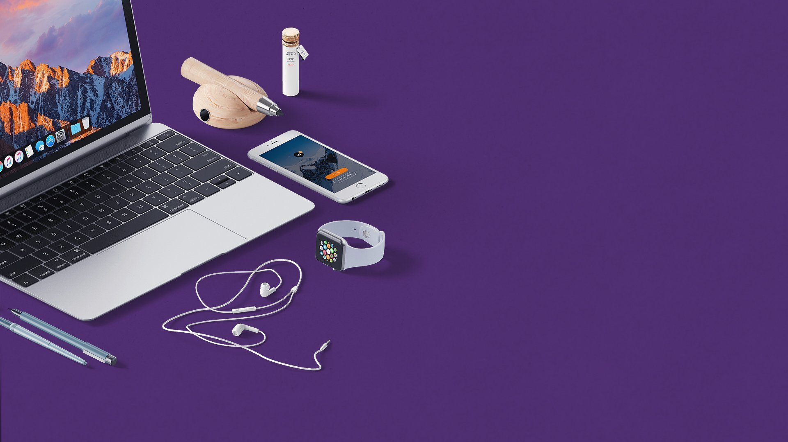

Современные технологии
Создаю сайты с использованием передовых технологий, обеспечивая адаптивность, кроссбраузерность и чистый код. Ваш проект будет выглядеть идеально на любых устройствах.

Web Developer

Чистая и семантчиески правильная разметка, обеспечивающие удобство восприятия как для пользователей, так и для поисковых систем.

Владение технологиями стилизации, позволяющее создавать живые и адаптивные интерфейсы.

Интерактивность и динамическое поведение сайта - владею методами работы с DOM, ассинхронным кодом и популярными фреймворками.
Умение работать с репозиториями.
Опыт работы с многостраничными сайтами на CMS.
Интерактивность и динамическое поведение сайта - владею методами работы с DOM, ассинхронным кодом и популярными фреймворками.
Всегда помню о сроках задачи.
Умею работать в команде.
Уделяю значимую часть внимания деталям.
Чистота, удобство и качество - главные элементы моего кода.

Невероятный опыт в работе с CMS по созданию многостраничного сайта. В проекте настроена синхронизация с 1С, SEO и всё это в обёртке стильного дизайна. Невероятный опыт в работе с CMS по созданию многостраничного сайта. В проекте настроена синхронизация с 1С, SEO и всё это в обёртке стильного дизайна. Невероятный опыт в работе с CMS по созданию многостраничного сайта. В проекте настроена синхронизация с 1С, SEO и всё это в обёртке стильного дизайна. Невероятный опыт в работе с CMS по созданию многостраничного сайта. В проекте настроена синхронизация с 1С, SEO и всё это в обёртке стильного дизайна. Невероятный опыт в работе с CMS по созданию многостраничного сайта. В проекте настроена синхронизация с 1С, SEO и всё это в обёртке стильного дизайна.